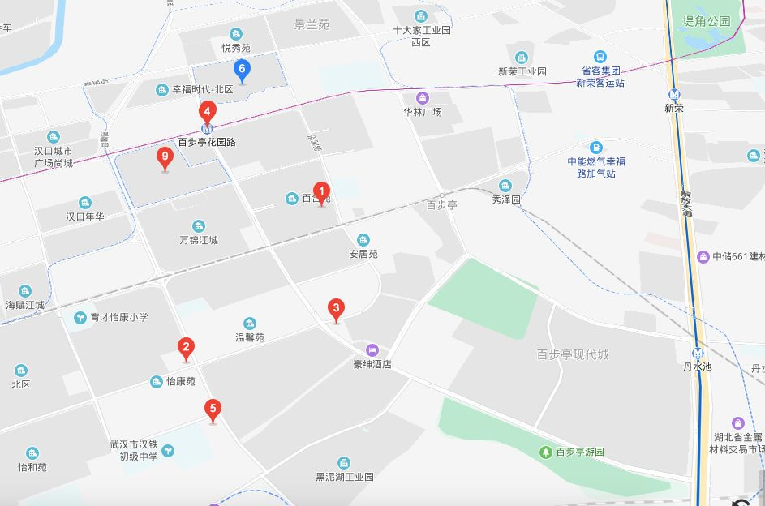
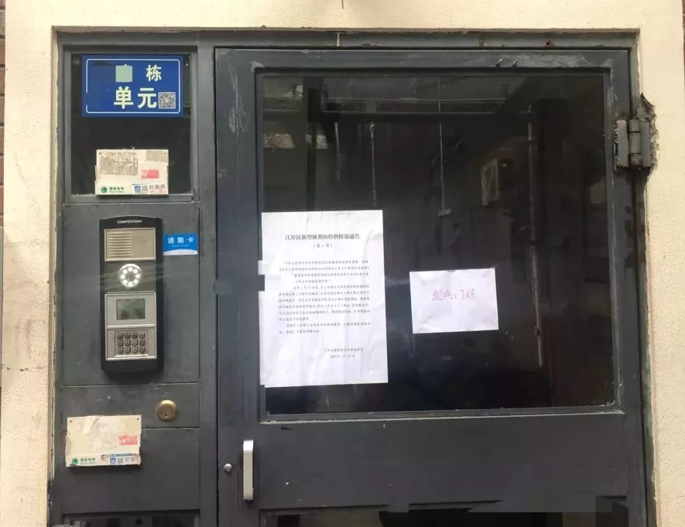

武汉百步亭“万家宴”过后 当地药店口罩脱销
原文链接 备份链接 【财新网】（记者 覃建行）新型冠状病毒肺炎确诊病例激增后，武汉百步亭社区曾于此间举办“万家宴”的活动引发了争议。1月22日，财新记者走访当地，多位居民称此前政府对疫情评估不够，导致在传染性疫情趋重的情况下还举办如此大 …

在武汉乃至全国，百步亭社区都是标杆式的存在。社区位于湖北武汉的江岸区，由 11 个小区组成，常住人口 13 万。

百步亭分为安居苑、百合苑、现代城、景兰苑、悦秀苑、幸福时代等 11 个小区。
图片来源：百度地图截图
2020 年 1 月 18 日，也就是钟南山院士连线央视时明确新型冠状肺炎「人传人」的前两天，百步亭社区举办了一场万人家宴。据《楚天都市报》 19 日的报道：「社区居民端出 13866 道菜品，4 万多个家庭欢聚一堂。」

《楚天都市报》相关报道
图片来源：网络截图
彼时，疫情的阴影已笼罩在武汉上空。这场举办至 20 届、曾是社区对外名片的「万人家宴」，因为人群聚集的缘故，让百步亭社区成了舆论的焦点。
1 月 23 日，万家宴结束第 5 天，武汉宣布封城。
2 月 4 日，万家宴结束第 16 天，《经济观察报》一则新闻称，百步亭社区下的一小区「55 栋楼里，33 栋出现发热病人」；2 月 5 日财新也刊发消息称，武汉百步亭社区多个门栋现发热患者。
百步亭再次被推上风口浪尖。
_「偶尔治愈」_找到几位在百步亭社区居住生活的居民，梳理了他们的生活轨迹以及现在所面临的问题，试图展现疫情阴影下，这座标杆社区中的人间百态。

流言与家宴
章宁今年 60 岁，自从 2003 年搬到百步亭安居苑，过去每年都会参加社区的万人家宴，还要争取拿奖。唯独今年没有参加，因为她信佛了。过去一整年，章宁都在北方做义工。
2019 年 12 月 30 日，章宁接到了弟弟离世的消息，赶回武汉。
当天，一些武汉人的微信朋友圈，开始流传几位医生提示可能有 SARS 病毒的截图。有相关的消息称，武汉市卫健委医政医管处内部通知称「武汉出现不明原因肺炎」，且与华南海鲜批发市场有关。
在百步亭现代城居住已有 10 年的王齐，正是这天，注意到了相关传言。
跨年那晚，王齐与同事在华南海鲜批发市场不远的地方聚餐。他还与同事讨论，如果 SARS 再来一次，他们所在校外培训行业会遭受重击。
1 月 1 日，「平安武汉」发布微博称 8 名散布谣言者被依法处理。王齐没有接收到教委停课的通知，大家依然正常上班。
1 月 18 日，百步亭举办了第 20 届「万人家宴」。当天，家住百步亭景兰苑柳莲的婆婆去参加了。
柳莲一家在百步亭景兰苑居住了有 5 年。因为流感，2019 年整个 12 月柳莲都没让孩子去上幼儿园。
1 月，她也听闻到有不明原因肺炎的消息，索性就让孩子一直在家里。因为在家带停课的小孩，也担心人群聚集感染流感，万家宴那天婆婆拿着一次性的碗盛了点菜品，便回家了。食用之前，认真洗了手。柳莲说，「幸亏那天是带回来吃的。」
1 月 19 日，王齐下班回家，在学校门口的药店看见有卖口罩，但发现快卖光了。店家解释说已经在进货，王齐就和同事说先备一点，以防万一。两人也没多买，觉得两包足矣。
1 月 20 日，武汉市卫健委通报 2 日内共计 136 例新增确诊病例；同日晚上，钟南山院士在接受央视连线时明确表示新型冠状病毒「人传人」。
王齐开始意识到事情严重起来，但发现已经买不到口罩了。昨天买的两包口罩显然不够用，于是，他通过孩子在江西的小姨购买到了一袋 N95 口罩寄过来；又托同学，从南京寄来 5 包医用外科口罩。
1 月 21 日，武汉市卫健委通报 15 例医护感染；湖北省卫健委通报，当日省内新增确诊病例 72 例。
这天，柳莲按照往常去日用品店上班，店里突然来了很多人买口罩，「之前也有人买，断断续续的，到了 21 号开始有人一次性买了二三十包。」
1 月 22 日，湖北省启动突发公共事件二级应急响应。
1 月 23 日，武汉自上午 10 时封城。但柳莲没有接到停班通知，照旧去了店里。
此时，店里的口罩已经全部售罄，有人买完了店里剩下的所有喷壶，说是用于装酒精消毒。
下午，柳莲工作的门店歇业。

社区不设防
2 月 10 日，湖北省召开新型冠状病毒感染的肺炎疫情防控工作新闻发布会上，原武汉市委书记马国强称，武汉开展了全民健康普查，人数排查的百分比达到了99%。
2 月 13 日，百步亭社区世博园的余恬终于接到第一个社区打来的体温筛查电话。她说，「我终于不是那个 1% 了」。
家住景兰苑的柳莲，之前也没有接到过体温筛查电话。直到 2 月 15 日，物业工作人员通过按楼下的门铃，询问柳莲一家「家里有几个人」「体温是否正常」。
相比迟来的电话，余恬所在的楼栋很早被贴上「发热门栋」了。封城之后，余恬响应政府号召，很少出门，她甚至不知道是什么时候贴上的。

余恬小区楼道门上张贴的发热门栋
图片来源：受访者提供
通过观察社区工作人员上门送菜与消杀的轨迹，余恬确定了确诊的病人离自己家难以想象地近。她说，「邻居被接走的时候，是 2 月 9 号晚上十点多。」
患者接走后，「发热门栋」的标识还是没有撤下，她怀疑自己这栋楼还有其他发热病人。
余恬自家住在百步亭集团下的另外一个社区，为了方便照顾老人，封城前带着孩子搬到了一站之外的世博园的父母家。
余恬表示，不管是父母所在的世博园，还是自己家的小区，都没有公布明确发热门栋所在的位置，也没有公布全小区确诊与疑似患者的数量以及他们处置方式。
据她介绍，公公婆婆家所住的小区在武昌，每天都会透明地公布小区内疫情状况。
「他们小区会每天公布几网格几网格有疑似患者，已经居家隔离；几网格几网格有多少确诊患者， 已经送去方舱或者哪个医院治疗，很规范。」
她说，「不用说具体哪一个门户号，但至少让大家心里有个数。」
百步亭现代城的王齐也面临了相同的情况，社区至今也没有公布到底有多少确诊患者，物业也没有公示确诊患者所在网格。尽管业主们每天在群中强烈要求，但物业方一直拒不公开。
他注意到，小区里的发热门栋标注，也经历了从无到有，再到无的过程。
他从楼上看到的救护车来了 4 趟。另外，王齐在微博「肺炎患者求助」的「超级话题」下，看到了 3 个自己小区的患者发出求助，希望能尽快确诊，落实医院床位。

王齐拍到的救护车
图片来源：受访者供图
除此之外，小区进出管理也很松散。封城以后，王齐和其他业主强烈要求小区物业对进出人员进行登记与体温测量。
1 月 31 日，现代城的物业拍了测量体温的照片发在了业主群里；但据其他业主反馈，没有实现严格进出登记。

现代城小区的紧急通知
图片来源：受访者供图
此后，王齐在初八（2 月 1 日），正月十四（2 月 7 日）都有出入过小区，但都没有遇到工作人员对自己测量体温或是人员登记。
体温测量时有时无状态，一直延续到 2 月 13 日，在武汉市新冠肺炎疫情防控指挥部明确住宅小区封闭管理措施的前一天，百步亭下的现代城才开始严格管控进出。
这天，武汉市确诊病例 35991 例，重症 7492 例，距离封城已经过去 22 天。

居民之困
封城以来，百步亭社区居民的日常生活，开始变得困难。
家里菜吃完的第二天，住在百步亭安居苑肖兰的老公会在早上 8 点从家里出发，到离家不远的中百超市买菜。刚开始的时候，大家簇拥挤成一团。后来，他们才在排队的时候相隔 1 米左右的距离。
8 点出门，12 点回家，老公手提的袋子里也仅仅抢到了剩下的排骨。「排队要排两三个小时」。肖兰说。
每天早上 8 点，网络订购平台也会开启一波蔬菜的抢购。「一分钟就抢完了。」肖兰说。
为了缓解买菜困难的问题，社区志愿者开始自发组织团购订菜，让送菜员在固定的时间段和地点给大家送菜。后来，因为社区太大，送菜员觉得不合算，又担心感染疾病，事情不了了之。
直到 2 月 16 日，肖兰居住的安居苑开始组织统一的团购。
相较于买菜，更让柳莲一家头疼的是，她买不到药了。
柳莲和婆婆都是二型糖尿病患者。按照往常，柳莲一天需要用注射 3 次胰岛素。她所用那一款胰岛素，只有在武汉的心连心大药房和武汉中心医院可以开到。
心连心药店的店长告诉她，因为封路，交通不便，他们也进不了货。柳莲又跑了附近的 5 家药房，全部扑了空。柳莲打电话到武汉中心医院询问情况，被告知因为疫情，她家附近的后湖院区已经封了；又由于封城，她也无法去到江汉路的院区。并且，接电话的医生建议，除了重症，不要来医院，去医院也不一定开到药。
柳莲甚至还托了自己认识的一个护士，希望从医院买点出来，依然不行。

柳莲的胰岛素
图片来源：受访者供图
上一次囤药是在除夕前。现在，她只能通过白天吃降糖药，控制住嘴，把一天三次的胰岛素注射改为 1 次来控制血糖，原本每天注射 70 单位的量，降低到 30 单位，还可以撑一段时间。
柳莲婆婆的药物短缺，显得更严重。虽然她的药在大多数药店都有卖，但老人家都是一支两支地购买，上一回出门已经买不到药了，就把店里仅有的 2 盒降糖药带了回来。
现在，婆婆的胰岛素只剩下一支 300 单位的胰岛素，而婆婆一天的胰岛素原本要注射 60 单位，算起来只够 5 天。
余恬一家面临相同的困境。她父母都是慢性病患者，高血压、糖尿病、冠心病有十几年了。除了常规的慢性病药物，余恬的母亲 2019 年 11 月刚做完眼睛手术，每天需要大量药物维持。
现在母亲的药，只够一天的量了。
从 2 月 14 日起，武汉小区开始实行封闭式管理。社区人员见余恬需要买的药太复杂，让她带上病历、身份证可以外出自行购买。
即便可以出小区，也无济于事。她说，「现在药品非常紧张，都不知道到哪里买。」

抱团取暖
章宁自从封城，就没有出过百步亭安居苑，因为没有口罩。
大年三十，章宁收到女儿发来的消息，说武汉封城了，叮嘱她买一些吃的。当时章宁还没有意识到疫情的严重，只买了 2 颗土豆，一些大白菜和芹菜。
这些菜，勉强吃到了大年初七。女儿和公婆住在外边小区，打电话来说要送吃的。章宁担心女儿感染，便骗她有的吃，让她不要过来。
邻居知道章宁一个人住，又没有口罩，便主动问她还有没有菜；得知情况后，直接在微信团了两份菜，又买了两包挂面。
菜品到货已经是晚上 12 点了，邻居一起拿回来，直接送到了章宁家门口，也没要钱。
章宁说，「要不是我的邻居年轻人帮我买菜，我可能会饿死了，家里没吃的，不能出去，也不敢出去。」
「饿死了是夸张，没菜吃是真的。」她补充。
团菜后，有物业工作人员有致电联系她是否有困难，她想着已经解决了，便没有再提。
章宁一直有爱藏东西的习惯，没有口罩就出不了门，就在家里翻箱倒柜，终于在一团报纸中找到了一个几年前的纱布口罩和一次性口罩。
出门倒垃圾的时候，她就把两个口罩摞起来一起用。回家后，就再把两个口罩挂在阳台上通风，下回接着用。
现代城的王齐家里食物与物资还算充足，但通过群聊得知，社区中有些老人没法解决生活物资问题，于是与其他业主组了一些团购群。
在 2 月 1 日第一次组织团购酒精后，现代城的业主各自通过不同渠道寻找货源，一起做买菜的团购，又在不同楼栋中选出负责人，负责落实菜品的分发。
「如果谁有一个渠道可以买菜了，就发到团购的群里面去。楼栋长就负责收集通知以及收款，等菜品到了再通知居民分批次下楼取菜。」

现代城二区菜品和分发
图片来源：受访者供图
王齐称，现代城的菜品团购自始至终都是业主在负责，他们多次致电物业与居委会，希望能由他们出面来组织，能够在货源谈判上更方便一些。
「菜品送到后，供货商一丢就走了，也都是靠业主自己在楼下守着。」
他说，「百步亭，人家都有点怕。」
王齐和业主之间自发打印出来纸张，贴在电梯上，以区别发热电梯与非发热电梯，减少交叉感染的风险。业主也曾和物业提议过，但始终无人执行，只能自己动手。
2 月 16 日，封城第 25 天，现代城终于由居委会出面开始组织菜品团购问题。
万家宴 1 个月
2 月 18 日，距离湖北省启动重大突发公共卫生事件一级响应过去 26 天，距离武汉封城过去 27 天，距离万家宴过去了整好 1 个月，距离王齐第一次听说不明病毒，已经 50 天。
王齐不清楚自己的校外培训公司是否能够撑到疫情结束。
目前，王齐和同事们每天都认真备课，尽量把教学搬到线上，完成之前允诺学生的教学课时。资金是最大的问题。现在账上的钱还够两个月，王齐和几个股东开始商量着筹款，尽力维持到复工。
章宁摆脱了没有口罩的局面，同学给她寄的口罩终于到了。自己留下一些后，她把口罩分了一些给邻居与物业的工作人员。

章宁收到的口罩
图片来源：受访者供图
2 月 12 号，余恬下楼拿快递，听到隔壁栋里有人隔着窗户在嚎叫。
「物业都很紧张，后来发现没有什么大事。就是人关久了，想要发泄一下。」
「如果可以，我也想跟着叫两声。」她又补充。
余恬老公没能赶回武汉，留守在湖北的另一座城市隔离。
她说，希望疫情早点结束，和老公团聚，那时，能买到条新鲜的鱼，一家人吃顿团圆饭。
（为保护受访者隐私，柳莲、章宁、王齐、肖兰、余恬系化名）
撰文：晓恺、婉莹
责编：于陆
封面图来源：2017 年万家宴，受访者提供
参考文献：
1.百步一亭 温馨家园.长江网 http ://img.cjn.cn/cjnbbt/bbtjs.htm
2.社区四万余家庭共吃团年饭.楚天都市报http://hb.ifeng.com/a/20200119/8066739_0.shtml
3.武汉明确住宅小区封闭管理措施：
小区保留一个出入口.中国青年报https://baijiahao.baidu.com/s?id=1658561001904393844&wfr=spider&for=pc
4.国家民委关于命名第五批全国民族团结进步创建示范区（单位）的决定
http://www.seac.gov.cn/seac/xxgk/201712/1072666.shtml
5. 「万家宴」社区百步亭确诊多例新冠肺炎 一小区55栋楼中33栋有发热病人.经济观察网.
https://mp.weixin.qq.com/s/8xlcJccSb9x02som5zM9bg
6.湖北省武汉市江岸区百步亭社区中国社区网
http://hb.cncn.org.cn/wuhan/baibuting/intro.html
7.武汉百步亭社区多个门栋现发热患者 中老年人为主.财新 http://china.caixin.com/2020-02-05/101511619.html
_— Tips —_
我们的新书《生死之间》出版了
可识别下方图片中的二维码购买

偶尔治愈
to-cure-sometimes
——
记录人与疾病、衰老、死亡的
相处方式

偶尔治愈 | 常常帮助 | 总是安慰
文章已于修改
原文链接 备份链接 【财新网】（记者 覃建行）新型冠状病毒肺炎确诊病例激增后，武汉百步亭社区曾于此间举办“万家宴”的活动引发了争议。1月22日，财新记者走访当地，多位居民称此前政府对疫情评估不够，导致在传染性疫情趋重的情况下还举办如此大 …
原文链接 备份链接 *这篇不知道又触及什么内容，一直无法查看，自我阉割。 今天武汉大雪纷飞，北风乱吹，正儿八经的下雪，不是忽悠人的小雪粒，我不爱玩雪，看着只觉得冷，倒怀念昨天快20度的好天气。 早上还是雨珠，到中午就开始飘雪，鹅毛大雪，作 …
原文链接 备份链接 受访者供图 实习生 徐竞然 “如果让我也去一线，你说我去吗？” 大年三十，看着讲述抗击新冠肺炎疫情的春晚节目，杨璐（化名）问女儿。 “不去，你又不是医生、记者，去有什么用？” 女儿说。这里是天津，距离武汉一千多公里。 …
原文链接 备份链接 图片来源：视觉中国 整理 | 何香奕 实习记者 唐青青 疫情面前，争分夺秒，全国近400万名社区工作者站在了前线。 基层社区承担着排查“第一道防线”，亦有系统布局上的深刻意义。2020年1月27日，国家卫健委指出，社区 …
原文链接 备份链接 _ 编者按 _ 2月5日，海螺推送了杨甸的文章《人压抑到极点，只想大哭一场——一个武汉市民的生活日记》，该文记录了作者从1月18到30号的生活，武汉城内人们的现况牵动着无数读者的心。作者应广大读者要求，更新了“武汉日 …